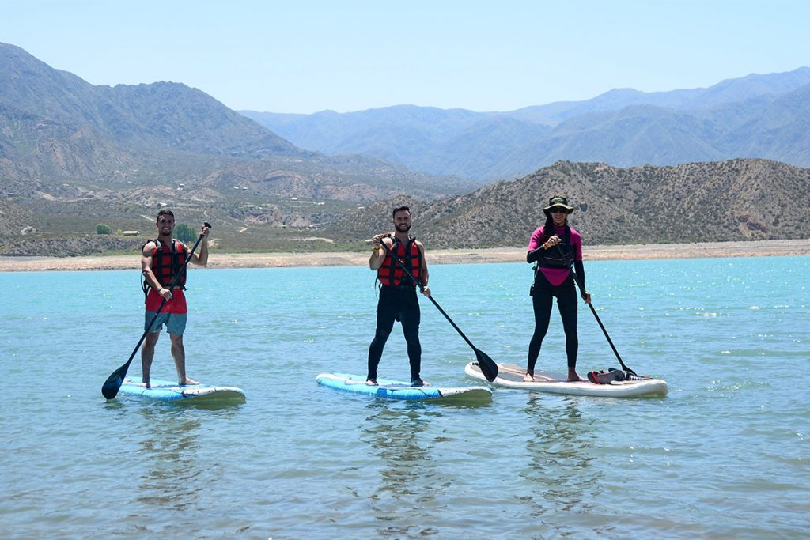
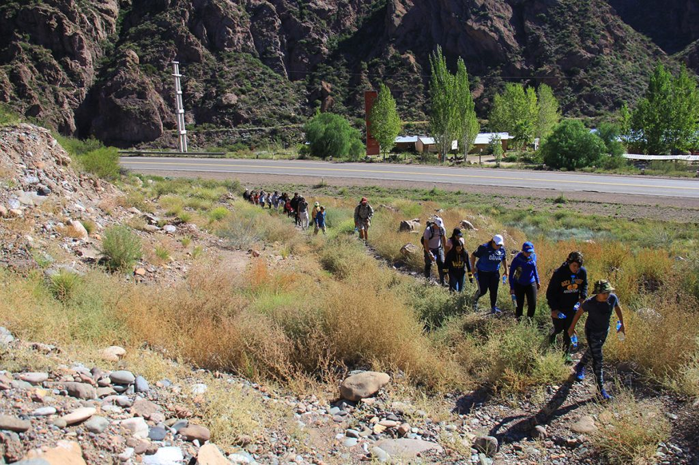
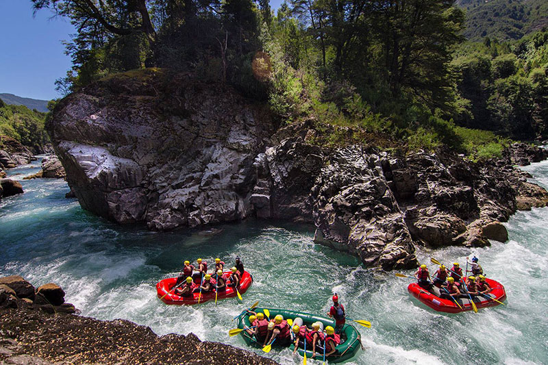

Participate in our great events

Paddleboarding
Standup paddleboarding (SUP) is a water sport born from surfing with modern roots in Hawaii. Stand up paddleboarders stand on boards that are floating on the water, and use a paddle to propel themselves through the water. The sport was documented in a 2013 report that identified it as the outdoor sporting activity with the most first-time participants in the United States that year. Variations include flat water paddling, racing, surfing, whitewater SUP, yoga, and fishing.
Here at "A rafting Company" we create racing events twice a year with the purpose of convoke participants all over the world. The most well-known athletes of the discipline join the competition bringing their knowledge and passion. Stay tune for more about the summer events.
Trekking
Hiking is a long, vigorous walk, usually on trails or footpaths in the countryside. Walking for pleasure developed in Europe during the eighteenth century. Religious pilgrimages have existed much longer but they involve walking long distances for a spiritual purpose associated with specific religions.
Hiking sometimes involves bushwhacking and is sometimes referred to as such. This specifically refers to difficult walking through dense forest, undergrowth, or bushes where forward progress requires pushing vegetation aside. In extreme cases of bushwhacking, where the vegetation is so dense that human passage is impeded, a machete is used to clear a pathway.
Out from competition we create activities with the most beautiful trails of the country. There are many events along the year and are not limited to a specific region. Please refer to the page for coming activities.
Rafting
Rafting and whitewater rafting are recreational outdoor activities which use an inflatable raft to navigate a river or other body of water. This is often done on whitewater or different degrees of rough water. Dealing with risk is often a part of the experience. This activity as an adventure sport has become popular since the 1950s, if not earlier, evolving from individuals paddling 10 feet (3.0 m) to 14 feet (4.3 m) rafts with double-bladed paddles or oars to multi-person rafts propelled by single-bladed paddles and steered by a person at the stern, or by the use of oars. Rafting on certain sections of rivers is considered an extreme sport and can be fatal, while other sections are not so extreme or difficult. Rafting is also a competitive sport practiced around the world which culminates in a world rafting championship event between the participating nations. The International Rafting Federation, often referred to as the IRF, is the worldwide body which oversees all aspects of the sport.
Our competition events are planned through IRF and convokes people all around the world. Refer to the page to know more about the annual competitions.